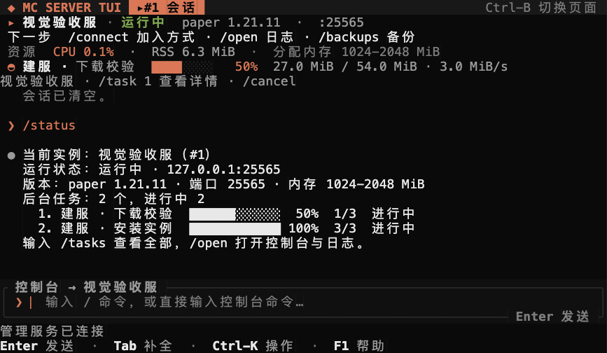
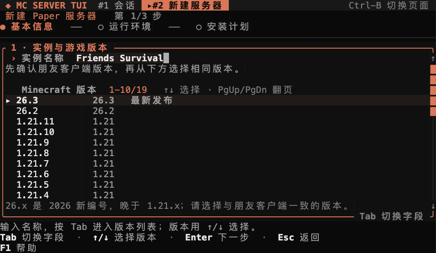
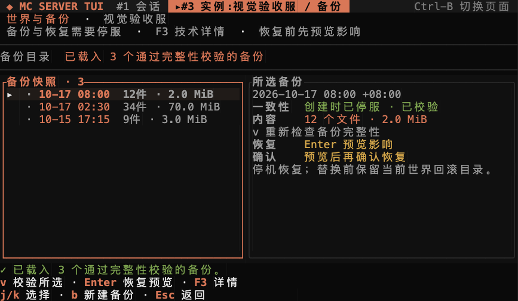

Create with context
Choose an exact Paper version, review Java and memory, then accept the EULA yourself. Fabric has its own explicit command.
/createMINECRAFT JAVA · MACOS + LINUX
From the first server to the next world backup. Run Paper and Fabric, follow the right console, and know what a restore will change — all from your terminal.
v0.2.2 · Unsigned alphaWhat’s new ↗

Actual TUI · deterministic demonstration data · v0.2.1
An independent runner owns each Java process. Return to the TUI when you need it.
01 / THE EVERYDAY WORKFLOW
One place to prepare a server, see what is happening, and look after the files that matter.
Choose an exact Paper version, review Java and memory, then accept the EULA yourself. Fabric has its own explicit command.
/createYour selected instance stays visible. Console drafts retain their destination when you switch servers.
/openStop the server, create a snapshot, verify its files, and review the impact before confirming a restore.
/backups02 / KNOW WHAT YOU ARE DOING
The selected instance, logs, and a target-labelled composer share one workspace. Management connectivity and Minecraft readiness stay distinct.
Pick a version and inspect a settings summary. Expand Java, memory and port with F3; downloads report their actual source and byte progress.

Local timestamps help you choose a snapshot. Verify it, inspect the affected worlds, and type the exact confirmation to restore.

03 / MAKE IT YOUR TERMINAL
Choose a palette here to preview the actual interface. In the app, use F2 or /theme. Your command and your server stay the same.
Claude
04 / YOUR NEXT SESSION STARTS HERE
Install the release, check Java, create a Paper instance, and find the address for your client.
Open the lesson 02 STOP → BACK UP → VERIFYFollow the stop, backup, verify and restore sequence. Know when the server needs to be started again.
Open the lesson 03 REASON → EVIDENCE → ACTIONRead the failure reason, expand the evidence, and check the matching recovery action without losing your draft.
Open the lesson05 / READY WHEN YOU ARE
Install for your current user, run setup, then open the TUI. The installer selects the artifact for your machine.
macOS 13+ Apple Silicon · Linux x86_64 / arm64
Read the guide →TAG=v0.2.2
curl -fsSL "https://github.com/JUANWANG-BUAA/mc-server-tui/releases/download/$TAG/install.sh" | sh
mc setup
mcJava must match your game version. Paper discovers an installed runtime. Start with an 80 × 24 terminal.
Prefer to build it yourself? Use the pinned Rust toolchain and the locked dependency versions.
git clone https://github.com/JUANWANG-BUAA/mc-server-tui.git
cd mc-server-tui
cargo build --workspace --release --locked
./target/release/mc setup
./target/release/mcPaper / Fabric · console and logs · controlled restart · four common settings · stopped-world backups · compatible ZIP/MRPACK import
Vanilla · existing-directory takeover · online/scheduled backups · Forge/NeoForge · signed releases
v0.2.2 is an unsigned alpha. SHA-256 checks verify integrity, not publisher identity. Keep an independent backup of important worlds.
No. Each instance has a resident runner. /quit or Ctrl-C exits the interface; use /stop to stop the selected Minecraft server.
Task history persists. Queued/running tasks become interrupted and are not automatically replayed. A retained partial download may be reused by a new attempt.
Readiness confirms the local server state. Use /connect for address hints, then check client version, firewall and port forwarding separately.
Local Rust and PTY checks cover the application. An earlier isolated Paper drill covered backup and restore. Real client world verification and a real Linux user-service drill remain open.